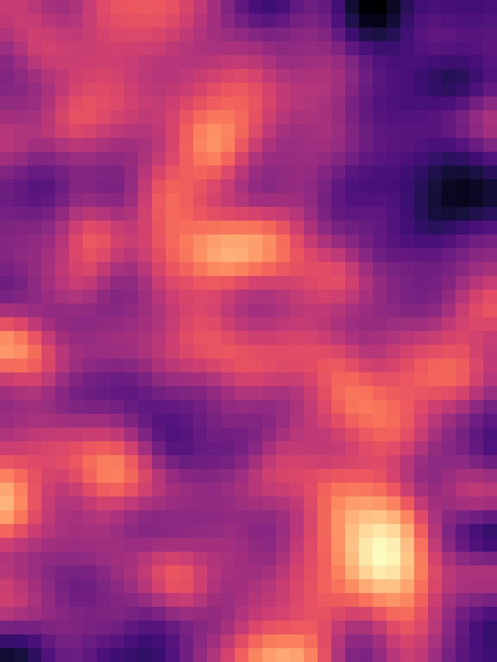
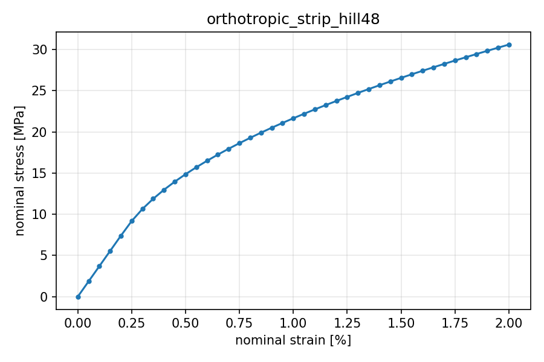
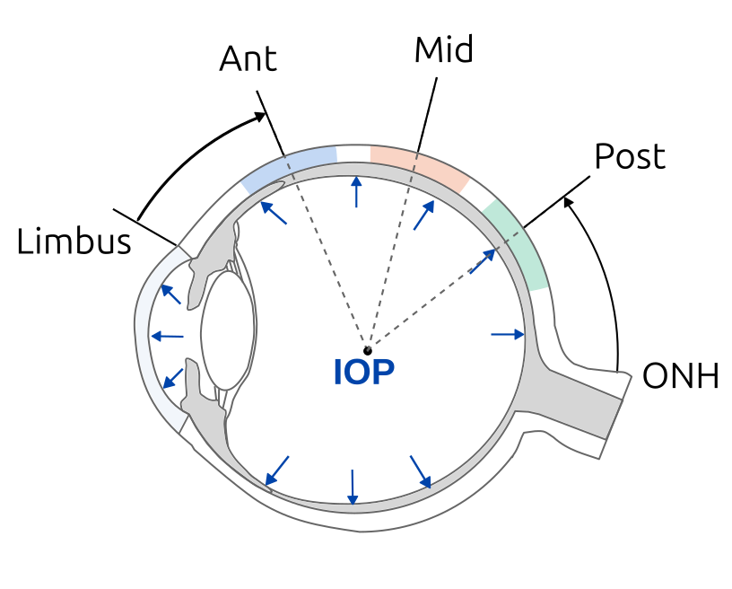

Arshia Valipour
Computational Engineering (M.Sc.)
I am a computational engineer with a solid foundation in the finite element method, built from both sides: implementing material models in open-source code and running automated simulations in commercial software such as Abaqus. My work so far covers anisotropic plasticity, stochastic FEM and the mechanics of fibre networks, complemented by hands-on experience in experimental soft-tissue biomechanics.
Research interests
Projects

Out-of-plane deformation and failure of 3D cellulose fibre networks
A computational framework in Abaqus and Python that links fibre-bond properties to the out-of-plane fracture behaviour of paper.
Project details →
Conditional spatial random fields for material properties
Turning one measured specimen into many statistically equivalent virtual specimens for Monte Carlo FE simulations.
Project details →
Anisotropic plane-stress plasticity with FEniCSx and JAX
A compact FE solver for Hill48 elasto-plasticity, with the return mapping and consistent tangent obtained by automatic differentiation.
Project details →
Experimental ocular biomechanics
An experimental pipeline combining OCT imaging and nanoindentation to measure regional stiffness of the sclera.
Project details →Experience
Student Research Assistant
- Open-source FEM development in FEniCSx and JAX (anisotropic plasticity)
- Stochastic FEM and spatial random fields
Visiting Research Assistant
- Nanoindentation, tensile and inflation testing with OCT imaging
- Two co-authored manuscripts; teaching in the Biomechanics Laboratory course
Intern
- MATLAB tool for asymmetric gear tooth profiles; stress and failure analysis
Working Student – CAD Designer
- Machine part design and technical drawings in SolidWorks
Education
M.Sc. Computational Engineering
B.Sc. Mechanical Engineering
Publications & presentations
- Submitted, 2026
Ariza-Gracia, M. Á., Frigelli, M., Valipour, A., Vallotton, K., & Büchler, P. Scleral stiffness under pressure is not a material property: same-site indentation and optical coherence tomography in three regions of intact porcine eyes. - Submitted, 2026
Frigelli, M., Vallotton, K., Valipour, A., Ariza, M., & Büchler, P. Under-flap corneal cross-linking restores corneal biomechanical stiffness after femtosecond flap creation: an ex vivo porcine study. Journal of Cataract & Refractive Surgery. - Poster, 2026
Valipour, A., Büchler, P., Ariza-Gracia, M. Á., & Frigelli, M. Region-dependent mechanical properties of the porcine sclera under physiological nanoindentation. SSBE Annual Meeting 2026. - Poster, 2024
Valipour, A., Ramezani, F., & Salehi, S. S. Modeling tumor growth: the impact of nutrient consumption and mechanical stress. 9th International Conference on Biomedical Engineering (ICBME).
Skills
Beyond research
In the mountains
When I’m not modelling materials, I’m testing my own limits in the Alps: guiding routes, climbing ridges, and covering long distances on foot and by bike.
Contact
Based in Witten, Germany. PhD, research and industry opportunities in computational mechanics and biomechanics are welcomed.